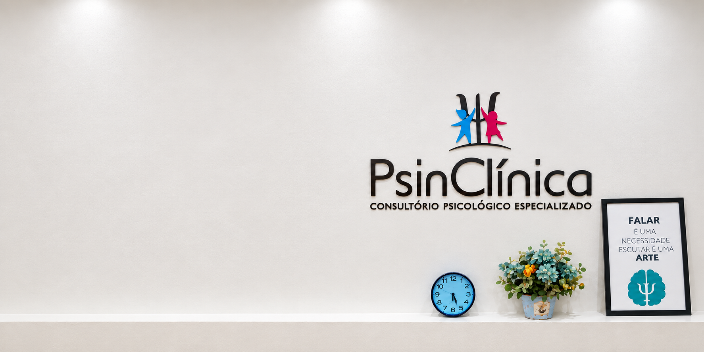
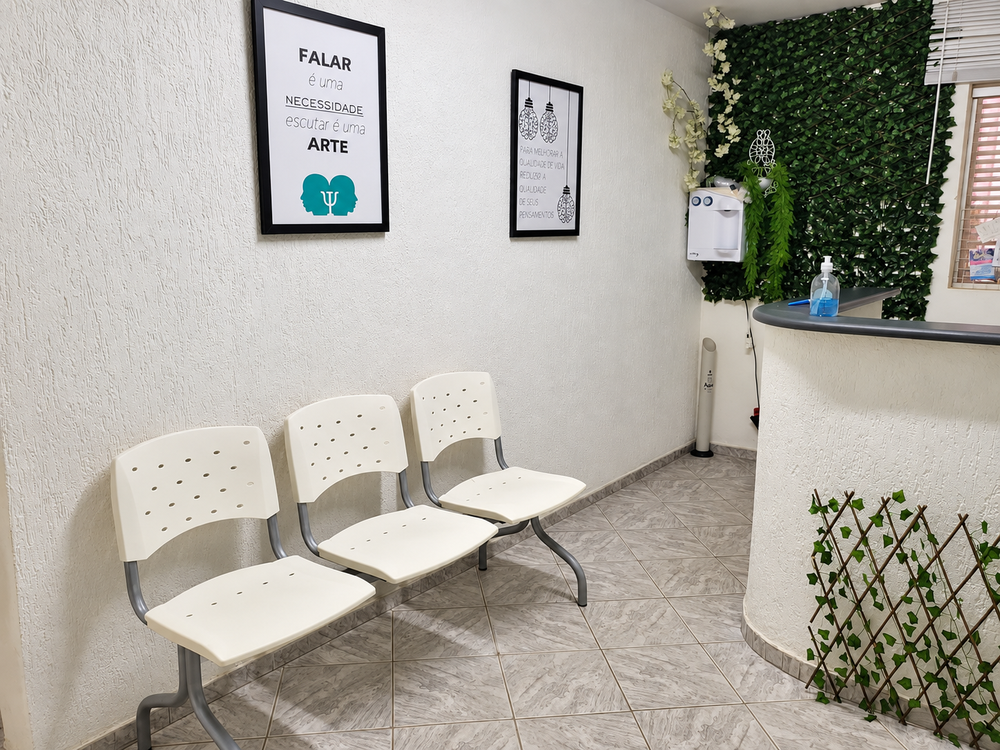
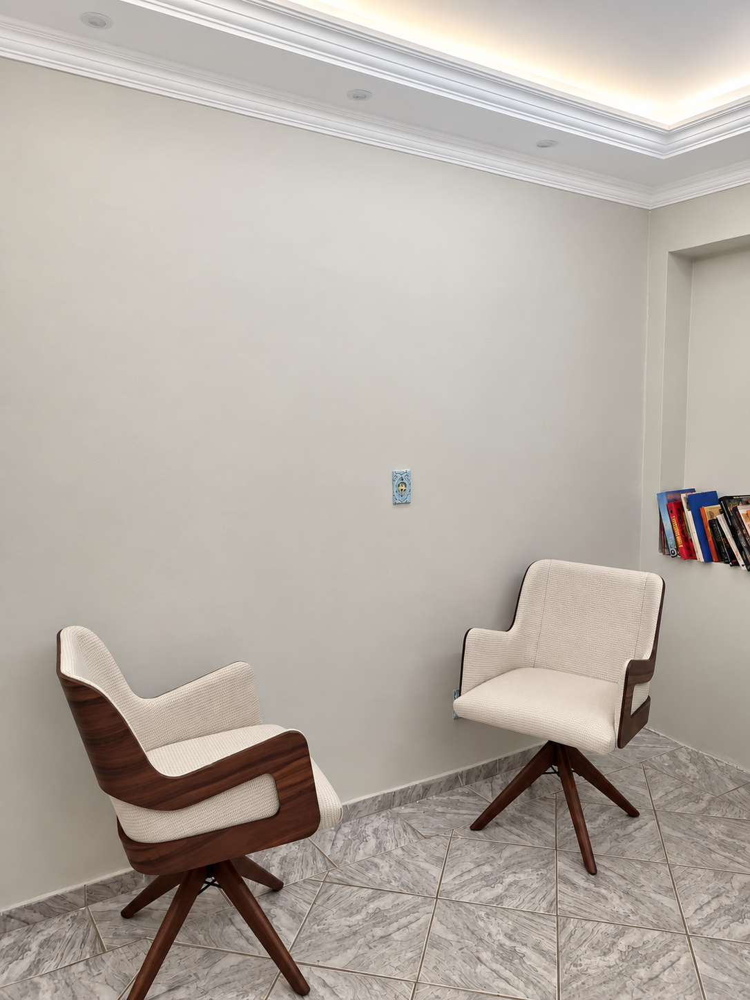
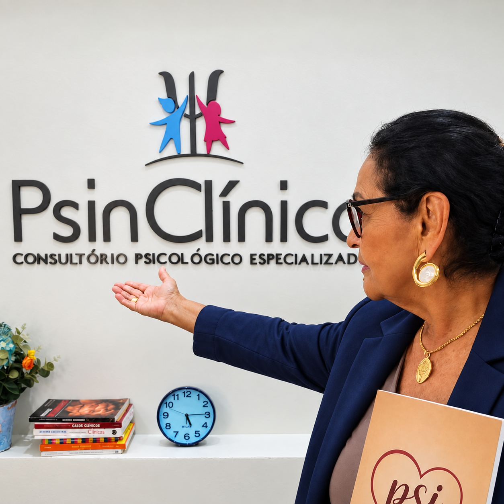

Allice Gracyelli de Melo
Psicóloga · CRP 01/15635
Allice é psicóloga e atua com crianças, famílias e mulheres. Seu trabalho inclui a Análise do Comportamento Aplicada e a orientação parental.

Sua história merece tempo, atenção e escuta.
A Psin Clínica é um espaço de psicologia e psicanálise para crianças, adolescentes e adultos. Aqui, diferentes histórias encontram lugar para ser ouvidas, com atenção ao momento de vida de cada pessoa.
Na infância, esse cuidado também conversa com quem está por perto. A participação dos responsáveis faz parte dos combinados construídos com o profissional, respeitando as necessidades de cada atendimento.
Nossos profissionais têm percursos e abordagens próprios. Conhecer quem vai acompanhar você ou sua família é parte desse encontro.
Psicóloga · CRP 01/15635
Allice é psicóloga e atua com crianças, famílias e mulheres. Seu trabalho inclui a Análise do Comportamento Aplicada e a orientação parental.
Psicólogo · CRP 01/27483
Sandson é psicólogo formado pela UDF. Sua abordagem de trabalho é a Terapia Cognitivo-Comportamental.
Psicóloga · CRP DF 29508
Emanuele é psicóloga e atende adolescentes e adultos. Seu trabalho é orientado pela Gestalt-terapia, com atenção à experiência e à história de cada pessoa.
Psicanalista clínica · Psicanálise
Suely é psicanalista clínica, com formação em Letras e Psicanálise. Sua atuação é voltada a mulheres e famílias.



Da chegada à continuidade, cada etapa abre espaço para conhecer sua história.
A recepção organiza o primeiro contato, apresenta as opções de atendimento e combina o encontro com o profissional.
Os primeiros encontros são dedicados à escuta da história e à compreensão do que motivou a busca por acompanhamento.
O profissional apresenta sua forma de trabalhar e constrói os combinados do atendimento. Na infância, a participação dos responsáveis também é alinhada.
O acompanhamento se desenvolve conforme as necessidades da pessoa. A frequência e os próximos passos são definidos ao longo desse processo.
Algumas respostas para começar com mais clareza.
Fale com a recepção pelo WhatsApp para consultar profissionais e horários. O atendimento é agendado após a confirmação da clínica.
Sim. A modalidade disponível depende do profissional e do atendimento solicitado. A recepção orienta sobre as opções e o acesso ao encontro online.
Na seção de profissionais, você encontra uma apresentação individual, abordagem e público atendido. Cada perfil tem um botão para solicitar agendamento.
A recepção informa os valores e as condições conforme o atendimento escolhido, além das regras de remarcação e cancelamento.
A participação dos responsáveis é combinada com o profissional, considerando a criança e o momento do acompanhamento. A organização do primeiro encontro é confirmada antes da consulta.
Demonstração visual · relatos fictícios
Desde o primeiro contato, recebemos as informações com clareza. Foi bom chegar sabendo como seria o encontro.
Encontramos um ambiente tranquilo e espaço para apresentar nossas dúvidas com calma.
A atenção no atendimento e a forma de explicar os próximos passos fizeram diferença na nossa chegada.
Já conhece a Psin? Compartilhe sua avaliação no perfil da clínica no Google.

Quando a comida se mistura às emoções, acolher a dificuldade é o começo da conversa.
Ler artigo

CSE 01 · Lote 06 · Sala 102
Taguatinga Sul · Brasília / DF
Atendimento presencial e online.
(61) 3351-4551